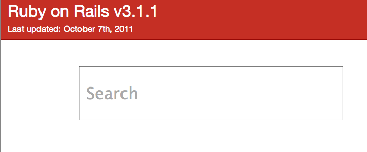

Recently, the Rails API got a facelift. Gone is the boring and dull blue four-frame-set API that once was. Now we have a dual-framed red API instead. The colours are good, I’ll give it that. Take a look at it:

Notice anything wrong?
Probably not.
So let’s take away some things until you start thinking it’s wrong. How about we take out that “RDOC_MAIN.rdoc” string – both instances – and we made the version more prominent? We’ll also get rid of the last modified timestamp, as a date is more friendly to people. Making these simple changes, we’ll get this:

Right. That’s a little better now. It’s clearer what the purpose of this page is and when it was last updated. We don’t care that the README is in a file called “RDOC_MAIN.rdoc”, and so we’ve removed it. Simple.
Now what else don’t we need? Well, when we go to the API we’re most likely going to want to find information about the methods provided by Rails. So why have the README there at all? While it’s a good placeholder for the content, that’s all it is: a placeholder. The main focus of the API site should be what we want to do on it: search for things. If you want to read the README, there’s better (and more standard) places for that, quite simply.
With the README gone, we’re going to have this gigantic void of empty, useless space. With this change, the main feature of the API, the searching, is almost hidden up in the top-left hand corner. So let’s make that more prominent.
Is that menu underneath it really useful? It contains an awfully large amount of items in it. Do people really care about that? Isn’t searching for something a much easier way to find it? I’d say so.
So we remove the README, we remove the menu, we make the search more prominent. What are we left with?
The title, the date the API was last updated and a box to search. There’s no mystery to what this box does: it says “Search” on it. It could also say “Search the Rails API”. Anybody should be able to figure out that you can search the API using this box.
But there’s no button! There doesn’t need to be a button, though. When a person searches, it will autocomplete their search and show the matching results from the API. You could even go a step further and weight certain results, so that things like `ActiveRecord::Base`, um, excuse me, ActiveRecord::FinderMethods’s find method appears before ActiveResource::Base.
Further more, you could get a search for “match” to show the routing (ActionDispatch::Routing::Mapper::Base) match method prominently, and the other match (like the one in HTML::Selector) methods less prominently, perhaps in a grey colour instead of black.
Anything wrong with this now? I think not. The API is less confusing and more prominently displays the function that most people use it for.
That’s my vision for the future of the Rails API. I know it probably won’t get to that stage, as there’s large technical hurdles in the way (such as indexing the entire documentation for Rails into a searchable format), but I think that it’s still possible.
So this weekend I dove into some Backbone.js with the help of Joey Beninghove's great Backbone.js screencasts and built this idea. There’s also a bit of the Twitter Bootstrap in use, which makes things pretty.
It’s called Sume and looks like this:

It’s just a proof-of-concept of this Rails API idea, allowing you to search for only a handful of classes and methods at the moment. But it presents it in a neat format.
Ah, and one more thing: it gives you a unique URL for each page, which is something the current Rails API doesn’t do. When you make a request to the link for ActiveSupport::Concern it actually takes you right to those docs. This makes it easy to link it to other people.